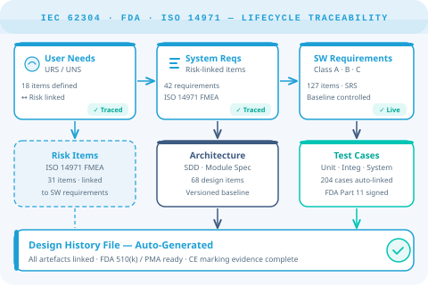

Accelerate innovation and automate proof of compliance across the full IEC 62304 software lifecycle — from first requirement to FDA submission, in a single connected system.

Software has become the primary differentiator in medical devices — from Class I wearables to Class III implantable systems. Every competitive pressure to ship faster collides with the non-negotiable requirements of FDA, CE marking, and IEC 62304 compliance.
Disconnected tools — requirements in Word, tests in spreadsheets, defects in JIRA — leave traceability gaps that only surface during inspections. By then, the cost of rework is enormous.
DHF artefacts scattered across drives and tools make audit preparation a weeks-long fire-drill before every submission.
Manual traceability matrices in Excel go stale within days of the next change — every update breaks the chain.
FDA 21 CFR Part 11 demands a compliant e-signature system with non-repudiation. Most tools bolt this on as an afterthought.
ISO 14971 risk analysis kept separate from requirements means design changes never trigger a risk re-assessment automatically.
One connected system from User Needs through post-market surveillance — with compliance evidence generated automatically.
Pre-configured software development lifecycle templates aligned to IEC 62304 Class A, B, and C. Workflow-enforced phase gates with electronic approval at each milestone.
Native electronic signatures with non-repudiation, complete audit trail for every work item change, and automated access control. Passes FDA and notified-body scrutiny out of the box.
Bidirectional live links from User Needs → System Requirements → Software Requirements → Test Cases → Defects. Traceability matrices generated on demand, never manually maintained.
Integrated risk management using the ISO 14971 template. Risk items are linked directly to requirements — any design change automatically flags affected risk assessments for review.
Generate a complete, structured DHF at any point in development. Live report pages pull from the same data that drives development — no manual document assembly.
100% browser-based access for distributed teams. Native ReqIF exchange for supply chain collaboration. Structured migration path from IBM DOORS for teams making the transition.
Corbinsoft configures Polarion to your specific regulatory pathway — not a generic template.
Our specialists have implemented Polarion ALM across 510(k), PMA, and CE marking programmes. Talk to us about your regulatory pathway.